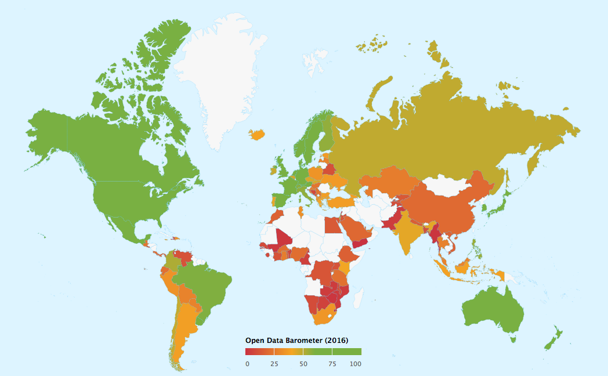

Open Data Barometer: now more than ever, we must strengthen open data initiatives across the world
The fourth edition of the Open Data Barometer finds that open data initiatives are stalling and may reinforce inequality. The ODI responds with three ways that governments can ensure open data benefits everyone
By Gillian Whitworth, with contributions by Jeni Tennison, Peter Wells, Fiona Smith and Jamie Fawcett
 The Open Data Barometer: global measure of how governments are publishing and using open data for accountability, innovation and social impact. Image by The World Wide Web Foundation CC BY-4.0
This week, the Open Data Barometer published the fourth edition of its global report. Analysing the readiness, implementation and impact of open data initiatives across the world, the report illustrates important trends of how governments have published and used open data in the past year.
The central lesson from this year’s report: governments must invest in opening up high-quality datasets that people need, supported by clear procedures, timelines and responsibilities. This will help create a strong, fair and sustainable data economy in which data gets to the people who need it, in order to realise the full value of data for everyone.
Key findings
This year’s report evaluates initiatives from 115 countries, a 25% increase from last year’s 92. New entrants, including Bulgaria, Albania, Latvia and the Dominican Republic, have entered the table midway, while political support for open data in the Ukraine and Jamaica have enabled them to rise 18 and 13 places respectively. However, with only 1% of land ownership data openly published by government, and 3% of contracting data, governments could be doing more to provide data that would promote innovation across sectors.
As the usual high-performers – notably the Nordic countries and the USA – have stalled, a new generation of open data adopters and steady risers have made significant gains within their regions. Countries such as Georgia, the Ukraine, the Philippines, Kenya and Mexico have notably progressed this year.
That said, progress on open data has been the exception rather than the rule. Of the data examined, only one in four datasets is made available under an open licence. Without confidence that the data can be accessed, used and shared without restriction, it will be difficult for countries to see impact from their data. The Barometer finds that only 6% of governments are successfully using open data to include marginalised groups in policy-making. A strong data infrastructure that is as open as possible creates a competitive advantage in the 21st century; opening up key data assets will help governments to unlock these benefits.
We should also be mindful of what is not captured by the Barometer, such as open data activities beyond government. Initiatives such as Open Banking and Open Active in the UK are working to open up key datasets that are held by the private sector.
Open Banking aims to increase competition in the banking sector. Open Active aims to increase physical activity and improve the nation’s health. Through using open data, both also provide opportunities for people to innovate with data, provide services more efficiently and grow businesses. These initiatives, as well as the publication of data by companies such as [Syngenta]()../open-enterprise-big-business-case-study-syngenta and Thomson Reuters, illustrate how in some countries open data is expanding beyond open government data.
The role of data portals
A number of the Barometer’s key findings and recommendations echo our work here at the ODI. In particular, the report finds that centralised data portals ‘have left behind a ghost town of open data projects’, failing to improve data discoverability, accessibility or usability in the long-term. This reinforces the ODI’s work with the European Data Portal in exploring portal sustainability, which finds that the governance and nature of portals must be adaptable to change with the needs of their users. In the future, this will mean new and better ways to search, find and publish our data.
Three ways governments can ensure that open data benefits everyone
Data has become a new form of infrastructure that underpins every sector of the economy. At the ODI, we believe that people around the world should be equipped and inspired to innovate with data, and that everyone should share in its benefits. However, to maximise its benefits of data to people and communities, we must ensure that organisations are using it equitably and ethically, while engaging those affected by it. This will enable everyone – whether citizens, businesses or governments – to make better informed, and better quality, decisions.
First, governments should consider joining international initiatives such as the Open Data Charter. This is a framework of principles for how governments should share and publish information, with many adopters featured high on this year’s index. In the Ukraine, the government is partnering with the Eurasia Foundation, East Europe Foundation, Transparency International – Ukraine, Kyiv School of Economics, the Open Data Institute, SocialBoost, and the Data Journalism Agency (TEXTY) to embed the Charter’s principles in government via an Open Data Roadmap, launched in March this year.
Elsewhere, strong political support in Argentina and Paraguay has led to the Charter being adopted in both countries, with Argentina preparing to host next year’s International Open Data Conference. Both countries have risen significantly this year, by 14 and 9 ranks respectively. In adopting principles such as ‘open by default’ and laying out clear processes for implementation, these governments are making strides towards creating a strong data infrastructure and sustainable initiative that can help open data to survive political transitions and provide benefits for everyone.
Second, high-performing countries typically have strong engagement with user groups, which help them to find ways of solving problems with data. This approach helps to generate social and economic impact. In Mexico, the government is experimenting with releasing data that people need through the Labora startup hub. Working in partnership with the ODI and Mexican civil society actors, the programme supports entrepreneurship with open data that will translate into economic and social impact for some of the country’s most vulnerable populations, including returning immigrants (Dream in Mexico and those who are struggling with mental health issues (YANA, or You Are Not Alone).
Governments and private sector organisations should examine how they can implement this approach to public/private partnerships for innovation, working with citizens and intermediaries to solve problems using data. Different countries will have different priorities; these may include creating new businesses for economic growth, redesigning public services for the 21st century or promoting social inclusion. Resources like our policy design patterns can also support policy-makers in integrating data-driven policies into government.
Third, everyone will benefit when there is widespread data literacy: the knowledge, skills and confidence to innovate with data. Innovation hubs like dLab in Tanzania provide essential training to help government initiatives with local communities; likewise, in Côte d’Ivoire the gender-focused TechMousso initiative has helped build technological skills as people design innovative solutions to local problems. In order to unlock value from data, governments must invest in building data literacy and data science skills for everyone.
Commenting on this year’s report, ODI International Development Manager Fiona Smith said:
This year, the Barometer points to a fundamental challenge around investing and supporting the culture change process across government. This means building data skills and capacity throughout the civil service, and strong data governance policies – recognising that data management and publication is a government-wide responsibility. It also means stronger engagement with data users, including with the private sector (themselves holders of valuable data) to identify points of collaboration, especially around achieving the Sustainable Development Goals. We believe this approach can lead to breakthroughs and transformation of entire sectors, including agriculture and nutrition, banking, transportation and the pharmaceutical industry.
About the Open Data Barometer
The Open Data Barometer is an international index that examines the open data initiatives of countries and regions globally. The index ranks countries according to their readiness, implementation and impact, with rankings informed by contextual data, technical assessments and a range of secondary indicators, including from the World Bank and World Economic Forum. Findings are released annually.